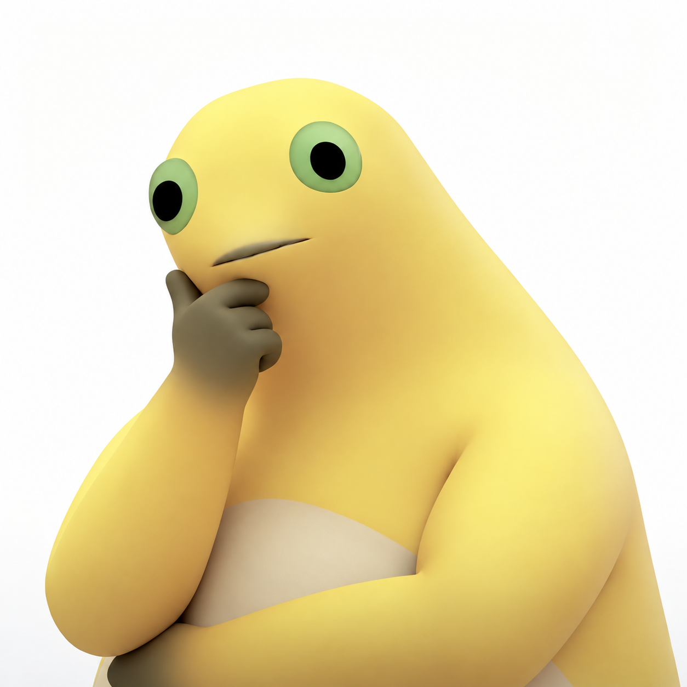

什么叫越合成
分数越低了

剩余分数
35,000
（-0）
你最好看看这个
分数是怎么变的
轮到你了
第 1 手
拖动，松手！
你赢了
你赢了！
再来一局
相同球序再试
暂停
继续
你
下一颗
电脑
下一颗
肯定有人会问：深大是什么学校，其实只是作者的学校，依旧今年是最有希望的一年
灵感来源兼友情链接：
https://yhsome.github.io/BigNaiWa/
https://plianasp-maker.github.io/scut-game/
怎么玩
你和电脑轮流投一球，同校徽碰到就合成。
停稳后堆过红线，你赢；合成深大，电脑赢。
开局 35,000（-0），能保多少保多少。每次合成扣 2、4、8……1024 分。
拖动后松手投球。键盘 ← → 调位置，空格投球。
保存回放
素材来源
开始
重新开局？
继续这局
重开